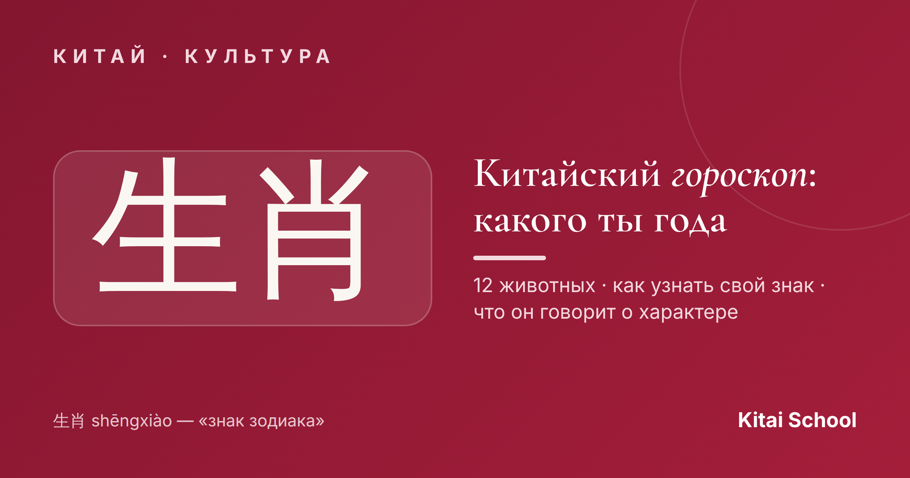
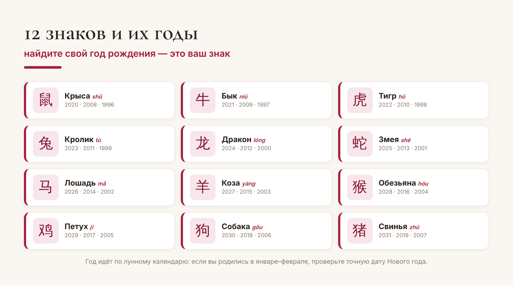
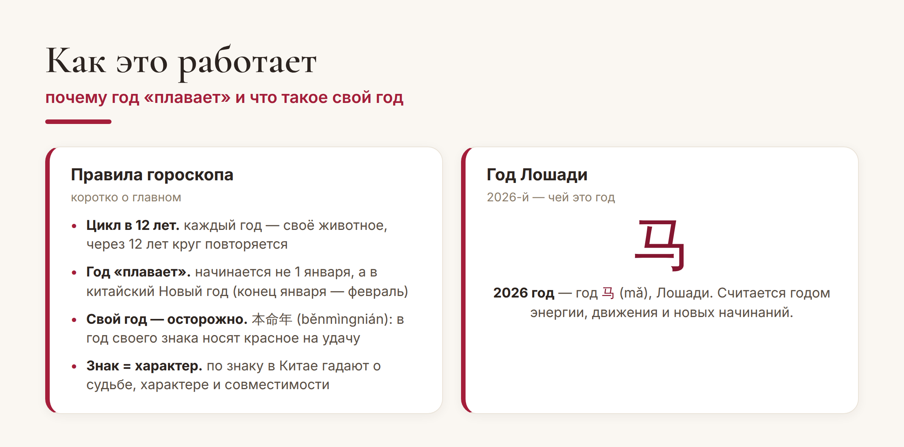

Китай · культура

«А ты какого года?» — в Китае это такой же обычный вопрос при знакомстве, как у нас «кто по гороскопу?». Только знаков здесь двенадцать, и все они — животные. Это 生肖 (shēngxiào), восточный гороскоп по годам. Давайте разберёмся, как узнать свой знак и что он означает.
В основе китайского гороскопа — цикл из двенадцати животных: Крыса, Бык, Тигр, Кролик, Дракон, Змея, Лошадь, Коза, Обезьяна, Петух, Собака и Свинья. Каждому году соответствует своё животное, а через двенадцать лет круг начинается заново. Найдите в таблице свой год рождения — это и есть ваш знак:

По легенде, порядок животных определила гонка, устроенная Нефритовым императором. Хитрая Крыса переплыла реку на спине Быка и в последний момент спрыгнула первой — поэтому она и открывает цикл, а трудяга Бык оказался вторым.
Важный нюанс, из-за которого многие ошибаются: китайский год начинается не 1 января, а в китайский Новый год — между концом января и серединой февраля. Поэтому если вы родились в январе или начале февраля, ваш знак может относиться к предыдущему году — проверьте точную дату Нового года в год вашего рождения.

Отдельная история — «свой год», 本命年 (běnmìngnián): год, когда возвращается ваш знак (каждые 12 лет — в 12, 24, 36 лет и так далее). Считается, что это год испытаний, поэтому китайцы носят в этот год что-то красное — нижнее бельё, носки, браслет — на удачу и защиту. Кстати, 2026 год — это год Лошади (马, mǎ).
Как и у западных знаков, у каждого животного — свой «характер». Коротко о самых ярких:
Дракон (龙) — самый престижный знак: сила, удача, харизма. В год Дракона в Китае даже случается всплеск рождаемости.
Тигр (虎) — смелый и энергичный лидер.
Кролик (兔) — мягкий, деликатный, дипломатичный.
Лошадь (马) — свободолюбивая, активная и лёгкая на подъём.
Свинья (猪) — добрая, честная и щедрая.
По знакам в Китае прикидывают и совместимость — например, в дружбе и браке. Относиться к этому можно с улыбкой, но как повод для разговора работает безотказно.
Проверьте себя. Нашли свой знак? Напишите в комментариях, кто вы по восточному гороскопу — и совпадает ли характер. А заодно посчитайте знак близких: это всегда весело.
Вот и весь китайский гороскоп: двенадцать животных, цикл в двенадцать лет и красное на удачу в свой год. Теперь вы точно знаете, какого вы года по восточному календарю — и сможете ответить на этот вопрос по-китайски.
Пусть ваш знак приносит удачу! 吉祥如意。